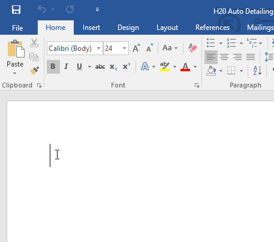
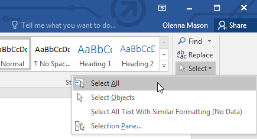
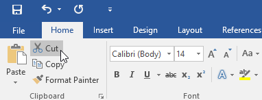
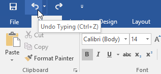

Menyimpan dan Berbagi Dokumen
Menggunakan titik penyisipan untuk menambahkan teks
Titik penyisipan adalah garis vertikal yang berkedip di dokumen Anda. Ini menunjukkan di mana Anda dapat memasukkan teks pada halaman. Anda dapat menggunakan titik penyisipan dalam berbagai cara.
Dokumen kosong : Saat dokumen kosong baru terbuka, titik penyisipan akan muncul di sudut kiri atas halaman. Jika mau, Anda dapat mulai mengetik dari lokasi ini.

Menambahkan spasi : Tekan bilah spasi untuk menambahkan spasi setelah kata atau di antara teks.

Baris paragraf baru : Tekan Enter pada keyboard Anda untuk memindahkan titik penyisipan ke baris paragraf berikutnya.

Penempatan manual :Setelah Anda mulai mengetik, Anda dapat menggunakan mouse untuk memindahkan titik penyisipan ke tempat tertentu di dokumen Anda. Cukup klik lokasi di teks tempat Anda ingin meletakkannya.

Tombol panah : Anda juga dapat menggunakan tombol panah pada keyboard untuk memindahkan titik penyisipan. The meninggalkan dan kanan tombol panah akan bergerak antara karakter yang berdekatan pada baris yang sama, sedangkan up dan turun panah akan bergerak antara garis ayat. Anda juga dapat menekan Ctrl+Left atau Ctrl+Right untuk berpindah antar kata dengan cepat.
Dalam dokumen kosong baru, Anda dapat mengklik dua kali mouse untuk memindahkan titik penyisipan ke tempat lain di halaman.
Memilih teks
Sebelum Anda dapat memindahkan atau memformat teks, Anda harus memilihnya. Untuk melakukan ini, klik dan seret mouse Anda ke atas teks, lalu lepaskan mouse. Kotak yang disorot akan muncul di atas teks yang dipilih.

Saat Anda memilih teks atau gambar di Word, bilah alat arahkan kursor dengan pintasan perintah akan muncul. Jika bilah alat tidak muncul pada awalnya, coba arahkan mouse ke atas pilihan.

Untuk memilih beberapa baris teks:
Gerakkan penunjuk tetikus ke kiri garis mana pun sehingga menjadi panah miring ke kanan.

Klik mouse. Garis akan dipilih.

Untuk memilih beberapa baris, klik dan seret mouse ke atas atau ke bawah.
Untuk memilih semua teks dalam dokumen Anda, pilih perintah Select pada tab Home, lalu klik Select All. Anda juga dapat menekan Ctrl + A pada keyboard Anda.

Pintasan lainnya termasuk mengklik dua kali untuk memilih kata dan mengklik tiga kali untuk memilih seluruh kalimat atau paragraf.
Untuk menghapus teks:
Ada beberapa cara untuk menghapus, atau menghapus, teks:
Untuk menghapus teks di sebelah kiri titik penyisipan, tekan tombol Backspace pada keyboard Anda.
Untuk menghapus teks di sebelah kanan titik penyisipan, tekan tombol Delete pada keyboard Anda.
Pilih teks yang ingin Anda hapus, lalu tekan tombol Hapus.
Jika Anda memilih teks dan mulai mengetik, teks yang dipilih akan otomatis dihapus dan diganti dengan teks baru.
Menyalin dan memindahkan teks
Word memungkinkan Anda untuk menyalin teks yang sudah ada di dokumen Anda dan menempelkannya di tempat lain, yang dapat menghemat banyak waktu dan tenaga. Jika Anda ingin memindahkan teks di dalam dokumen Anda, Anda dapat memotong dan menempelkan atau menyeret dan melepaskan.
Untuk menyalin dan menempel teks:
Pilih teks yang ingin Anda salin.

Klik perintah Salin pada tab Beranda. Anda juga dapat menekan Ctrl+C pada keyboard Anda.

Tempatkan titik penyisipan di tempat Anda ingin teks muncul.

Klik perintah Tempel pada tab Beranda. Anda juga dapat menekan Ctrl+V pada keyboard Anda.

Teks akan muncul.

Untuk memotong dan menempelkan teks:
Pilih teks yang ingin Anda potong.
Klik perintah Potong pada tab Beranda. Anda juga dapat menekan Ctrl + X pada keyboard Anda.

Tempatkan titik penyisipan Anda di tempat Anda ingin teks muncul.

Klik perintah Tempel pada tab Beranda. Anda juga dapat menekan Ctrl+V pada keyboard Anda.
Teks akan muncul.

Anda juga dapat memotong, menyalin, dan menempel dengan mengklik kanan dokumen Anda dan memilih tindakan yang diinginkan dari menu tarik-turun. Saat Anda menggunakan metode ini untuk menempel, Anda dapat memilih dari tiga opsi yang menentukan bagaimana teks akan diformat: Keep Source Formatting, Merge Formatting, dan Keep Text Only. Anda dapat mengarahkan mouse ke setiap ikon untuk melihat seperti apa tampilannya sebelum Anda memilihnya.
Untuk menarik dan melepaskan teks:
Pilih teks yang ingin Anda pindahkan.
Klik dan seret teks ke lokasi yang Anda inginkan untuk memunculkannya. Sebuah persegi panjang kecil akan muncul di bawah panah untuk menunjukkan bahwa Anda sedang memindahkan teks.
Lepaskan mouse, dan teks akan muncul.

Jika teks tidak muncul di lokasi yang Anda inginkan, Anda dapat menekan tombol Enter pada keyboard untuk memindahkan teks ke baris baru.
Batalkan dan Ulangi
Katakanlah Anda sedang mengerjakan sebuah dokumen dan secara tidak sengaja menghapus beberapa teks. Untungnya, Anda tidak perlu mengetik ulang semua yang baru saja Anda hapus! Word memungkinkan Anda untuk membatalkan tindakan terbaru saat Anda melakukan kesalahan seperti ini.
Untuk melakukannya, cari dan pilih perintah Undo pada Quick Access Toolbar. Anda juga dapat menekan Ctrl+Z pada keyboard Anda. Anda dapat terus menggunakan perintah ini untuk membatalkan beberapa perubahan berturut-turut.

Sebaliknya, perintah Redo memungkinkan Anda untuk membalikkan undo terakhir. Anda juga dapat mengakses perintah ini dengan menekan Ctrl+Y pada keyboard Anda.

Simbol
Jika Anda perlu memasukkan karakter yang tidak biasa yang tidak ada di keyboard Anda, seperti a hak cipta (©) atau merek dagang (™), Anda biasanya dapat menemukannya dengan perintah Simbol.
Untuk menyisipkan simbol:
Tempatkan titik penyisipan di tempat Anda ingin simbol muncul.

Klik tab Sisipkan.

Cari dan pilih perintah Simbol, lalu pilih simbol yang diinginkan dari menu tarik-turun. Jika Anda tidak melihat yang Anda inginkan, pilih Simbol Lainnya...

Simbol akan muncul di dokumen.

Tantangan!
Buka dokumen latihan kami.
Gulir ke halaman 2.
Tempatkan titik penyisipan di bagian atas dokumen dan ketik Now Introducing...
Gunakan tombol panah Anda untuk memindahkan titik penyisipan ke harga Paket Detail Tanda Tangan dan ubah menjadi $99,99 /bln.
Di bagian bawah dokumen, gunakan seret dan lepas untuk bergerak Serahkan saja detailnya kepada kami hingga akhir baris terakhir.
Di akhir baris yang baru saja Anda pindahkan, masukkan simbol merek dagang. Jika Anda tidak dapat menemukan simbol merek dagang, masukkan simbol lain pilihan Anda.
Setelah selesai, dokumen Anda akan terlihat seperti ini: